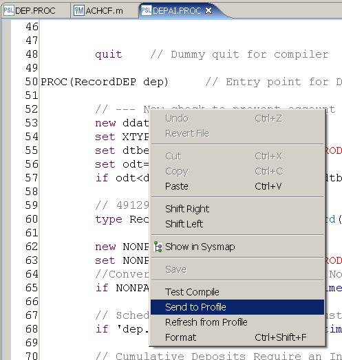
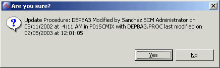
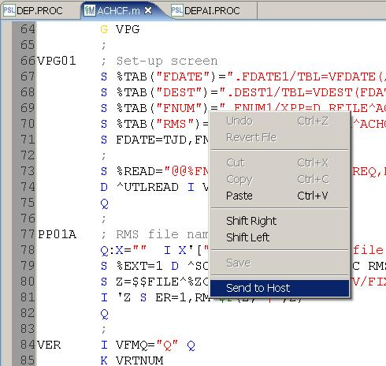
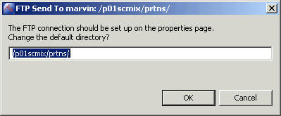

Profile resources can be sent to a Profile RTE with the Send to Profile function. This function can be accessed from the right-click menu on the Resource Navigator in the Fidelity Profile Perspective. This function can also be accessed from the right click menu within the edit pane. Profile resources are sent to the RTE defined in the project properties. M routines are sent via FTP protocol also defined in the project properties.
The send function can be run from right click menu in the navigator and editor.

A confirmation window provides details about the send action.

M routines are sent via FTP

The confirmation window provides the opportunity to change the destination of the file.
